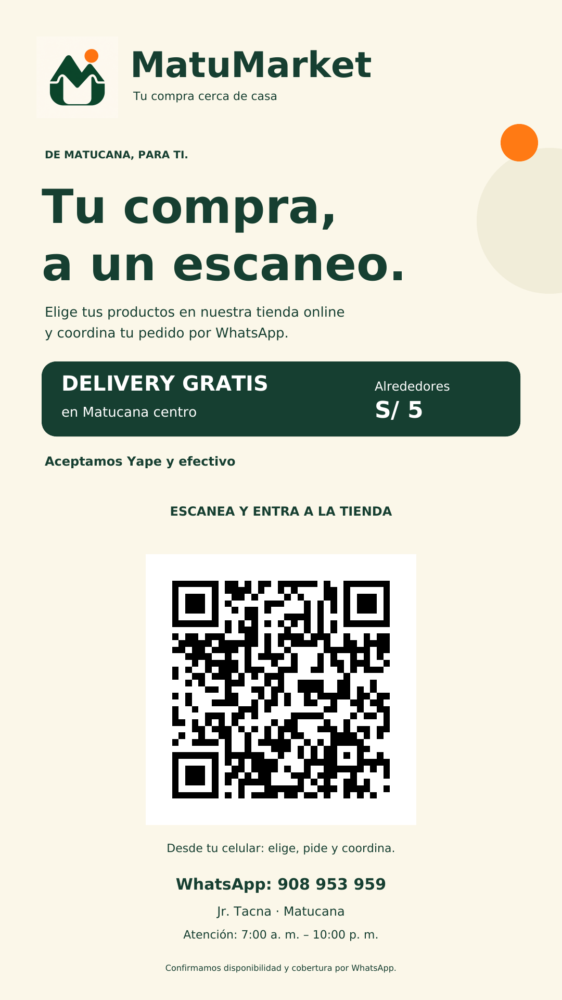
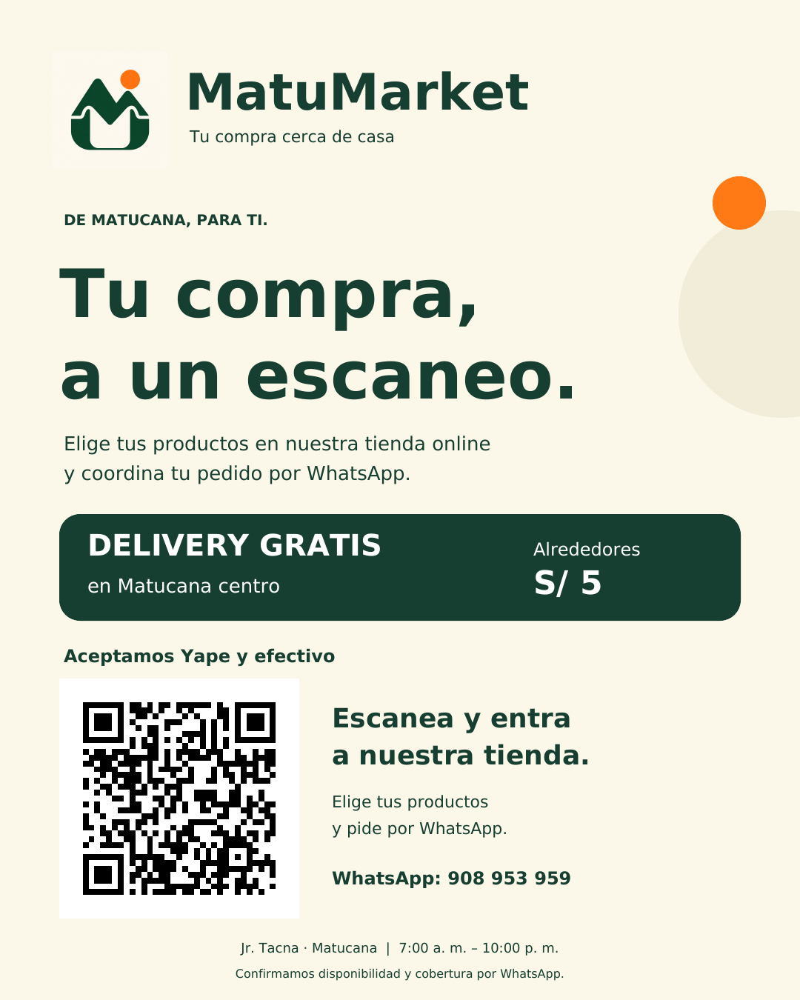

MatuMarket para compartir
Tu compra cerca de casa.
Guarda tus archivos y compártelos cuando el catálogo esté listo.
Descargar todo en ZIPVisitar la tiendaEstado de WhatsApp
Formato vertical · 1080 × 1920

Guardar imagenAbrir imagen
Publicación para redes
Formato vertical · 1080 × 1350

Guardar imagenAbrir imagen
QR de la tienda
Escanea para abrir MatuMarket.
Guardar QRDescargar SVG

Afiche para tu local
Documento A4 con logo, QR y datos de contacto. Imprime al 100 % y comprueba el QR en la hoja.
Descargar PDF A4Abrir PDFTexto para acompañar la publicación
MatuMarket · Tu compra cerca de casa
Haz tu pedido online y coordina por WhatsApp.
Delivery gratis en Matucana centro. Alrededores: S/ 5.
Aceptamos Yape y efectivo.
Entra aquí: https://bodega-matucana-express-hx8c.vercel.app/
Confirmamos disponibilidad y cobertura por WhatsApp.
Guardar texto